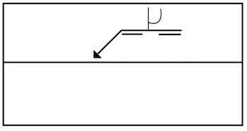
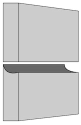
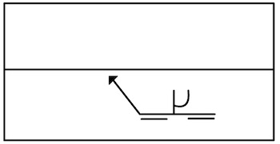
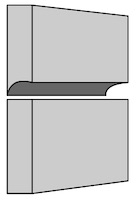
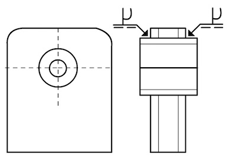
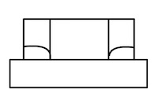
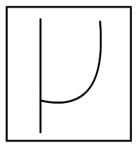

Svets i J-fog
Eftersom fogen är osymmetrisk är hänvisningslinjen viktig. Den pekar på den kant som ska fogberedas.
Hänvisningspilen pekar på den nedre plåten.


Här har hänsvisniningspilen bytt rikting och pekar på den övre halvan. Bilden visar att den övre materialdelen är fogberedd.


Här har vi ett rektangulärt rör med stor godstjocklek och i detta ska en hylsa svetsas fast.
Här har hänvisningslinjen inte någon betydelse eftersom fogberedningen bara kan ske på ett sätt.

Bilden visar att röret är fogberett runt hylsan. Den lämpar sig bra om svetsen måste läggas från utsidan.

Vad betyder grundsymbolen?

Svar:
Vad kallas den linje som pilen pekar på?
Svar:
Vad kallas den linje som pilen pekar på?
Svar:
← Halv Y-fog Kälfog →